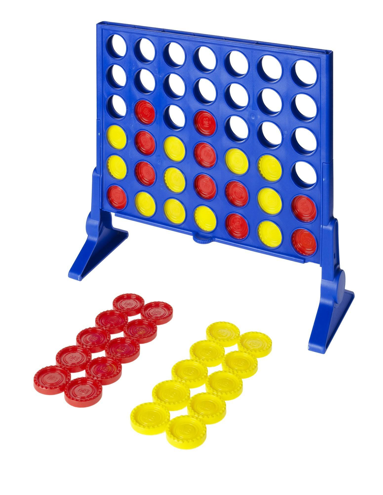

Connect Four»
Connect Four is an interesting game — while it is marketed as a kids’ game, it has been studied in game theory and computer science because it is a good platform for experimenting with computer AIs.
It is a “solved game”; researchers have discovered the perfect play for it — a mapping of an exact sequence that will win against the best possible defense. You may find this short video very interesting.
The AI for your Pico’s connect four game is written in Python and uses a common AI algorithm called Minimax; many game AIs use this as their foundation. In particular, the AI also uses a technique called Alpha-Beta pruning to avoid exploring paths that cannot be possible better/worse than paths already seen.
One of the challenges of writing this AI is that the Pico has relatively limited memory compared to a real computer — only about 128 kilobytes are available for a Python program — and the minimax algorithm relies on deep recursion and making new copies of the game board at every step. Therefore, the code for the AI is well-optimized for performance and minimal memory usage (at the expense of some code clarity; the AI functions are overly long and not broken down, to minimize adding things to the call stack).
Once you’re done with everything, I’ll show you the code for everything here.